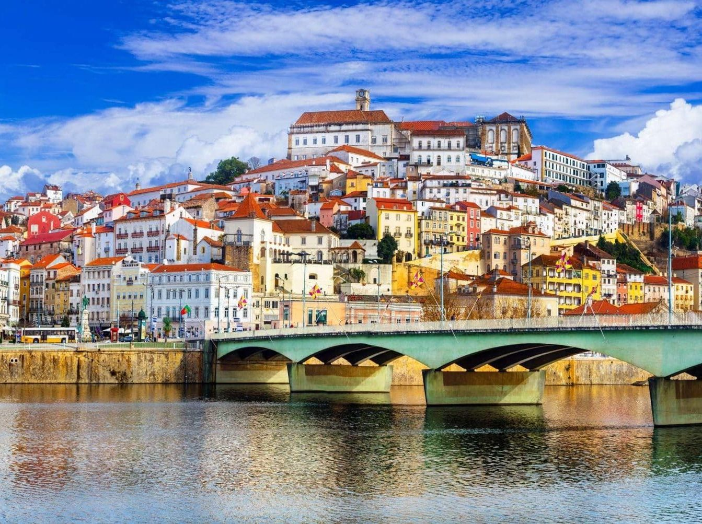

|
Coimbra, a cidade dos estudantes e um farol de cultura e tradição,
situa-se nas margens do rio Mondego, no coração de Portugal.
Com uma história que remonta à época romana, Coimbra é um mosaico encantador
de patrimônio histórico, arquitetura grandiosa e uma atmosfera acadêmica vibrante.
O epicentro intelectual da cidade é a renomada Universidade de Coimbra, uma das mais
antigas da Europa. Fundada no século XIII, o pátio da universidade, conhecido como Pátio
das Escolas, é testemunha de séculos de aprendizado e descoberta. A majestosa Biblioteca
Joanina, com suas estantes de madeira e livros raros, é uma jóia arquitetônica que ecoa
o esplendor acadêmico do passado. |
 |